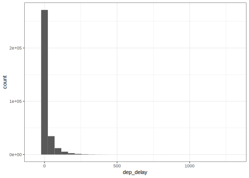
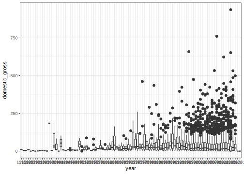

22 Univariate distributions and statistics
One of the purposes of this class is for you to learn Statistical and Machine Learning techniques commonly used in data analysis. By the end of the term, you should be able to read papers that use these methods critically and analyze data using these methods.
When using any of these tools we will be we will be asking ourselves if our findings are “statistically significant”. For example, if we make use of a classification algorithm to distinguish between to groups of entities and find that we can correctly predict a class in 70 out of our 100 cases, how can we determine if this could have happened by chance alone? To be able to answer these questions, we need to understand some basic probabilistic and statistical principles. In this section we will review some of these principles.
22.1 Variation, randomness and stochasticity
In the preceeding sections of the class we have not spoken too much about randomness and stochasticity. We have, however, spoken about variation. When we discussed the notion of spread in a given dataset, measured by the sample standard deviation, for example, we are referring to the fact that in a population of entities (e.g., a set of tweets) there is naturally occuring variation in measurements (different frequency of word usage, for example). Notice that we can discuss the notation of variation without referring to any randomness, stochasticity or noise.
Why do we study probability then? Because, we do want to distinguish, when possible, between natural occuring variation and randomness or stochasticity. For instance, suppose we want to learn something about education loan debt for 19-30 year olds in Maryland. We could find loan debt for all 19-30 year old Maryland residents, and calculate mean and standard deviation. But that’s difficult to do for all residents. So, instead we sample (say by randomly sending Twitter surveys), and estimate the average and standard deviation of debt in this population from the sample. Now, this presents an issue since we could do the same from a different random sample and get a different set of estimates. Why? Because there is naturally-occuring variation in this population.
So, a simple question to ask is, how good are our estimates of debt mean and standard deviation from sample of 19-30 year old Marylanders?
In another example, suppose we build a predictive model of loan debt for 19-30 year old Marylanders based on other variables (e.g., sex, income, education, wages, etc.) from our sample. How good will this model perform when predicting debt in general?
We use probability and statistics to answer these questions. We use probability to capture stochasticity in the sampling process and model naturally occuring variation in measurements in a population of interest.
One final word, the term population which we use extensively here means the entire collection of entities we want to model. This could include people, but also images, text, GO positions, etc.
22.1.1 Random variables
The basic concept in our discussion of probability is the random variable. Consider a situation where you are tasked with determining if a given tweet was generated by a bot. You sample a tweet at random from the set of all tweets ever written and have a human expert decide if it was generated by a bot or not. You can denote this as a binary random variable \(X \in \{0,1\}\), with value \(1\) if the tweet is bot-gerneated and 0 otherwise. Why is this a random value? Because it depends on the tweet that was randomly sampled.
22.2 (Discrete) Probability distributions
Now we can start talking about the distribution of values of a random variable. In our example, random variable \(X\) can take values 0 or 1. We would like to specify how these values are distributed over the set of all possible tweets one can randomly sample. We use a probability distribution to do this.
A probability distribution is a function \(P:\mathcal{D} \to [0,1]\) over set \(\mathcal{D}\) of all values random variable \(X\) can take to the interval \([0,1]\). The function \(P\) describes how values of \(X\) are distributed over domain \(\mathcal{D}\).
We start with a probability mass function \(p\) which must satisfy two properties:
- \(p(X=x) \geq 0\) for all values \(x \in mathcal{D}\), and
- \(\sum_{x\in \mathcal{D}} p(X=x) = 1\)
Now, how do we interpret quantity \(p(X=1)\)?
- \(p(X=1)\) is the probability that a uniformly random sampled tweet is bot-generated, which implies
- the proportion of bot-generated tweets in the set of “all” tweets is \(p(X=1)\).
I say “all” because it’s really the set of tweets one could possibly sample.
Armed with a probability mass function we can talk about a cumulative probability distribution that describes the sum of probability up to a given value. We saw a similar concept for the empirical distribution of data when we discussed quartiles.
22.2.1 Example The oracle of TWEET
Suppose we have a magical oracle and know for a fact that 70% of “all” tweets are bot-generated. In that case \(p(X=1) = .7\) and \(p(X=0)=1-.7=.3\).
22.3 Expectation
What if I randomly sampled \(n=100\) tweets? How many of those do I expect to be bot-generated? Expectation is a formal concept in probability:
\[ \mathbb{E} X = \sum_{x\in \mathcal{D}} x p(X=x) \]
What is the expectation of \(X\) (a single sample) in our tweet example?
\[ 0 \times p(X=0) + 1 \times p(X=1) = \ 0 \times .3 + 1 \times .7 = .7 \]
Now, consider random variable \(Y=X_1 + X_2 + \cdots + X_{100}\). What is \(Y\)?
Remember we want to know the expected number of bot-generated tweets in a sample of \(n=100\) tweets. We have \(X_i=\{0,1\}\) for each of the \(n=100\) tweets, each a random variable, which we obtained by uniformly and independently sampling for the set of all tweets.
With that, now random variable \(Y\) equals the number of bot-generated tweets in my sample of \(n=100\) tweets. In this case:
\[ \begin{aligned} \mathbb{E} Y & = \mathbb{E} (X_1 + X_2 + \cdots + X_{100}) \\ {} & = \mathbb{E} X_1 + \mathbb{E} X_2 + \cdots + \mathbb{E} X_{100} \\ {} & = .7 + .7 + \cdots + .7 \\ {} & = 100 \times .7 \\ {} & = 70 \end{aligned} \]
This uses some facts about expectation you can show in general.
For any pair of random variables \(X_1\) and \(X_2\), \(\mathbb{E} (X_1 + X_2) = \mathbb{E} X_1 + \mathbb{E} X_2\).
For any random variable \(X\) and constant a, \(\mathbb{E} aX = a \mathbb{E} X\).
22.4 Estimation
Our discussion so far has assumed that we have access to an oracle that told us \(p(X=1)=.7\), but we don’t. For our tweet analysis task, we need to estimate the proportion of “all” tweets that are bot-generated. This is where our probability model and the expectation we derive from it comes in.
Given data \(x_1, x_2, x_3, \ldots, x_{100}\), with 67 of those tweets labeled as bot-generated (i.e., \(x_i=1\) for 67 of them), we can say \(y=\sum_i x_i=67\). Now from our discussion above, we expect \(y=np\) where \(p=p(X=1)\), so let’s use that observation to estimate \(p\)!
\[ \begin{aligned} np = 67 & \Rightarrow \\ 100p = 67 & \Rightarrow \\ \hat{p} = \frac{67}{100} & \Rightarrow \\ \hat{p} = .67 \end{aligned} \]
Our estimate is wrong, but close (remember we had an oracle of TWEET), but can we ever get it right? Can I say how wrong I should expect my estimates to be?
Notice that our estimate of \(p\), \(\hat{p}\) is the sample mean of \(x_1,x_2,\ldots,x_n\). Let’s go back to our oracle of tweet to do a thought experiment and replicate how we derived our estimate from 100 tweets a few thousand times.
# proportion of bot-tweets in the the tweet population
# as given by the oracle of TWEET
p <- 0.7
# let's sample 100 tweets
# this function chooses between values in a vector (0 and 1)
# with probability given by vector prob
# we need 100 samples from this vector with replacement
# since there are fewer items in the vector than the size
# of the sample we are making
x <- sample(c(0,1), size=100, replace=TRUE, prob=c(1-p,p))
# compute the estimated proportion that are bot-generated (using the sample mean)
phat <- mean(x)
# if we had an oracle that let's us do this cheaply,
# we could replicate our experiment 1000 times
# (you don't in real life)
# first let's write a function that gets an estimate
# of proportion from a random sample
get_estimate <- function(n, p=0.7) mean(sample(c(0,1), size=n, replace=TRUE, prob=c(1-p,p)))
# let's make a vector with 1000 _estimates_
phats_100 <- replicate(1000, get_estimate(100))
# now let's plot a histogram of the
hist(phats_100, xlab=expression(hat(p)), xlim=c(0.5,1), main="Distribution of p estimates from 100 tweets")What does this say about our estimates of the proportion of bot-generated tweets if we use 100 tweets in our sample?
Now what if instead of sampling \(n=100\) tweets we used other sample sizes?
par(mfrow=c(2,3))
# what if we sample 10 tweets
phats_10 <- replicate(1000, get_estimate(10))
hist(phats_10, main="10 tweets", xlab="p hat", xlim=c(.5,1), probability=TRUE)
# what if we sample 100 tweets
phats_100 <- replicate(1000, get_estimate(100))
hist(phats_100, main="100 tweets", xlab="p hat", xlim=c(.5,1), probability=TRUE)
# what if we sample 500 tweets
phats_500 <- replicate(1000, get_estimate(500))
hist(phats_500, main="500 tweets", xlab="p hat", xlim=c(.5,1), probability=TRUE)
# what about 1000 tweets
phats_1000 <- replicate(1000, get_estimate(1000))
hist(phats_1000, main="1000 tweets", xlab="p hat", xlim=c(.5,1), probability=TRUE)
# what about 5000 tweets
phats_5000 <- replicate(1000, get_estimate(5000))
hist(phats_5000, main="5000 tweets", xlab="p hat", xlim=c(.5,1), probability=TRUE)
# what about 10000 tweets
phats_10000 <- replicate(1000, get_estimate(10000))
hist(phats_10000, main="10000 tweets", xlab="p hat", xlim=c(.5,1), probability=TRUE)
We can make a couple of observations:
- The distribution of estimate \(\hat{p}\) is centered at \(p=.7\), our unknown population proportion, and
- The spread of the distribution depends on the number of samples \(n\).
This is an illustration of two central tenets of statistics that serves as the foundation of much of what we will do later in the course to interpret the models we build from data.
22.4.1 Law of large numbers (LLN)
Given independently sampled random variables \(X_1,X_2,\cdots,X_n\) with \(\mathbb{E} X_i=\mu\) for all \(i\), the LLN states that the sample mean
\[ \frac{1}{n} \sum_i X_i \to \mu \]
tends to the population mean (under some assumptions beyond the scope of this class). regardless of the distribution of the \(X_i\).
An implication of this is that using the sample mean is the right thing to estimate parameters by matching their expected value!
22.4.2 Central Limit Theorem (CLT)
The LLN says that estimates built using the sample mean will tend to the correct answer, the CLT describes how these estimates are spread around the correct answer.
Here we will use the concept of variance which is expected spread, measured in squared distance, from the expected value of a random variable:
\[ \mathrm{var(X)} = \mathbb{E} (X - \mathbb{E} X)^2 \]
Example: consider the variance of our random tweet example:
\[ \begin{aligned} \mathrm{var(X)} & = \sum_{\mathcal{D}} (x-\mathbb{E} X)^2 p(X=x) \\ {} & = (0 - p)^2 \times (1-p) + (1 - p)^2 \times p \\ {} & = p^2(1-p) + (1-p)^2p \\ {} & = p(1-p) (p + (1-p)) \\ {} & = p(1-p) (p - p + 1) \\ {} & = p(1-p) \end{aligned} \]
Now, we can state the CLT:
\[ \frac{1}{n} \sum_{i=1} X_i \]
tends towards a normal distribution as \(n \rightarrow \infty\). This says, that as sample size increases the distribution of sample means is well approximated by a normal distribution. This means we can approximate the expected error of our estimates well.
22.5 The normal distribution
The normal distribution describes the distribution of continuous random variables over the range \((-\infty,\infty)\) using two parameters: mean \(\mu\) and standard deviation \(\sigma\). We write “\(Y\) is normally distributed with mean \(\mu\) and standard deviation \(\sigma\)” as \(Y\sim N(\mu,\sigma)\). We write its probability density function as:
\[ p(Y=y) = \frac{1}{\sqrt{2\pi}\sigma} \mathrm{exp} \left\{ -\frac{1}{2} \left( \frac{y-\mu}{\sigma} \right)^2 \right\} \]
Here are three examples of probability density functions of normal distributions with mean \(\mu=60,50,60\) and standard deviation \(\sigma=2,2,6\):
# 100 equally spaced values between 40 and 80
yrange <- seq(40, 80, len=100)
# values of the normal density function
density_values_1 <- dnorm(yrange, mean=60, sd=2)
density_values_2 <- dnorm(yrange, mean=50, sd=2)
density_values_3 <- dnorm(yrange, mean=60, sd=6)
# now plot the function
plot(yrange, density_values_1, type="l", col="red", lwd=2, xlab="y", ylab="density")
lines(yrange, density_values_2, col="blue", lwd=2)
lines(yrange, density_values_3, col="orange", lwd=2)
legend("topright", legend=c("mean 60, sd 2", "mean 50, sd 2", "mean 60, sd 6"), col=c("red","blue","orange"), lwd=2)
Like the discrete case, probability density functions for continuous random variables need to satisfy certain conditions:
- \(p(Y=y) \geq 0\) for all values \(Y \in (-\infty,\infty)\), and
- \(\int_{-\infty}^{\infty} p(Y=y) dy = 1\)
One way of remembering the density function of the normal distribution is that probability decays exponentially with rate \(\sigma\) based on squared distance to the mean \(\mu\). (Here is squared distance again!)
Also, notice the term inside the squared?
\[ z = \left( \frac{y - \mu}{\sigma} \right) \]
this is the standardization transformation we saw in previous lectures. In fact the name standardization comes from the standard normal distribution \(N(0,1)\) (mean 0 and standard deviation 1), which is very convenient to work with because it’s density function is much simpler:
\[ p(Z=z) = \frac{1}{\sqrt{2\pi}} \mathrm{exp} \left\{ -\frac{1}{2} z^2 \right\} \]
In fact, if random variable \(Y \sim N(\mu,\sigma)\) then random variable \(Z=\frac{Y-\mu}{\sigma} \sim N(0,1)\).
22.5.1 CLT continued
We need one last bit of terminology to finish the statement of the CLT. Consider data \(X_1,X_2,\cdots,X_n\) with \(\mathbb{E}X_i= \mu\) for all \(i\), and \(\mathrm{sd}(X_i)=\sigma\) for all \(i\), and their sample mean \(Y=\frac{1}{n} \sum_i X_i\). The standard deviation of \(Y\) is called the standard error:
\[ \mathrm{se}(Y) = \frac{\sigma}{\sqrt{n}} \]
Ok, now we can make the CLT statement precise: the distribution of \(Y\) tends towards \(N(\mu,\frac{\sigma}{\sqrt{n}})\) as \(n \rightarrow \infty\). This says, that as sample size increases the distribution of sample means is well approximated by a normal distribution, and that the spread of the distribution goes to zero at the rate \(\sqrt{n}\).
Disclaimer: there a few mathematical sublteties. Two important ones are that
- \(X_1,\ldots,X_n\) are iid (independent, identically distributed) random variables, and
- \(\mathrm{var}X < \infty\)
Let’s redo our simulated replications of our tweet samples to illustrate the CLT at work:
# we can calculate standard error for each of the
# settings we saw previously and compare these replications
# to the normal distribution given by the CLT
# let's write a function that adds a normal density
# plot for a given sample size
draw_normal_density <- function(n) {
se <- sqrt(p*(1-p))/sqrt(n)
f <- dnorm(seq(0.5,1,len=1000), mean=p, sd=se)
lines(seq(0.5,1,len=1000), f, col="red", lwd=1.6)
}
par(mfrow=c(2,3))
# what if we sample 10 tweets
phats_10 <- replicate(1000, get_estimate(10))
hist(phats_10, main="10 tweets", xlab="p hat", xlim=c(.5,1), probability=TRUE)
draw_normal_density(10)
# what if we sample 100 tweets
phats_100 <- replicate(1000, get_estimate(100))
hist(phats_100, main="100 tweets", xlab="p hat", xlim=c(.5,1), probability=TRUE)
draw_normal_density(100)
# what if we sample 500 tweets
phats_500 <- replicate(1000, get_estimate(500))
hist(phats_500, main="500 tweets", xlab="p hat", xlim=c(.5,1), probability=TRUE)
draw_normal_density(500)
# what about 1000 tweets
phats_1000 <- replicate(1000, get_estimate(1000))
hist(phats_1000, main="1000 tweets", xlab="p hat", xlim=c(.5,1), probability=TRUE)
draw_normal_density(1000)
# what about 5000 tweets
phats_5000 <- replicate(1000, get_estimate(5000))
hist(phats_5000, main="5000 tweets", xlab="p hat", xlim=c(.5,1), probability=TRUE)
draw_normal_density(5000)
# what about 10000 tweets
phats_10000 <- replicate(1000, get_estimate(10000))
hist(phats_10000, main="10000 tweets", xlab="p hat", xlim=c(.5,1), probability=TRUE)
draw_normal_density(10000)Here we see the three main points of the LLN and CLT:
- the normal density is centered around \(\mu=.7\),
- the normal approximation gets better as \(n\) increases, and
- the standard error goes to 0 as \(n\) increases.